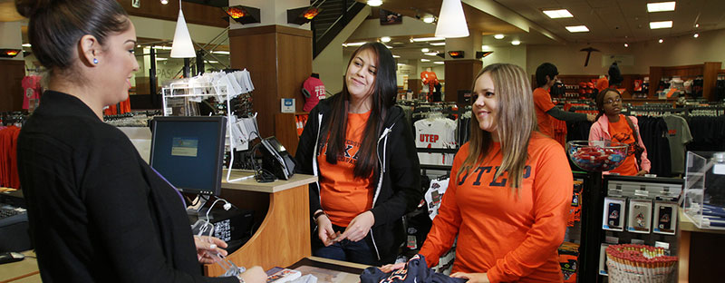

Miner Bucks is a program that allows you to use your Miner Gold Card to make purchases at participating retail locations on campus like the UTEP Bookstore, the Copy Mine in the University Library and food service outlets on campus. The money deposited in Miner Bucks can be used for copies and printing at the library when the semester print allocation runs out and to pay for the laundry facilities in on campus housing.

There are two easy ways to add money to your Miner Bucks:
1. In Person: Bring cash or a check to the Cashiers located in the Mike Loya Academic Services Building.
2. Online: Visit adminapps.utep.edu/csgoldsso. If you are not already logged in, you will be prompted to provide your UTEP credentials. Once logged in, you will click the continue button. Under the menu options on the left, you will select “Deposit to Account” and follow the directions on the subsequent pages to add funds to either Miner Bucks or Miner Meals.